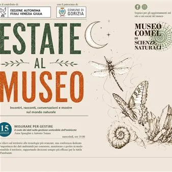

da mer 15 lug a ven 23 ott
Estate al Museo - Incontri, racconti, conversazioni e mostre sul mondo naturale
Il Museo di Scienze Naturali Alvise Comel propone una serie di conferenze estive ad ingresso libero, ospitate nel gazebo esterno. In calendario: mercoledì 15 luglio – ore 18.00 “Misurare per gestire. Il ruolo dei dati nella gestione sostenibile dell’ambiente” Intervengono: Anna…
 Indicazioni
Indicazioni
- Costi e prenotazioni
- Costo non indicato · Prenotazione non indicata
- Programma
- Programma da verificare. Apri la fonte ufficiale per orari e possibili aggiornamenti.
- In caso di maltempo
- Nessuna indicazione specifica pubblicata.
- Note
- Acquisito automaticamente dalla fonte.
L’EVENTO
Descrizione completa
Il Museo di Scienze Naturali Alvise Comel propone una serie di conferenze estive ad ingresso libero, ospitate nel gazebo esterno.
In calendario:
mercoledì 15 luglio – ore 18.00
“Misurare per gestire. Il ruolo dei dati nella gestione sostenibile dell’ambiente”
Intervengono: Anna Spangher e Antonio Tomao
venerdì 17 luglio – ore 18.00
“Il viaggio dell’astrobiologia” – tra le origini della vita e mondi extrasolari
Intervengono: Erica Bisesi, Michele Maris e Giuseppe Murante
mercoledì 5 agosto – ore 18.00
“Giardini e alberi di Gorizia e Isontino” – alla scoperta del patrimonio verde del territorio goriziano
Intervengono: Pierpaolo Pischiutta e Michela Spangher
venerdì 4 settembre – ore 18.00
“Piante e fiori” – tra tradizioni e usanze
Interviene: Liubina Debeni
Venerdì 11 settembre – ore 18.30
“Tropico del Collio” – i coralli fossili di Russiz
Intervengono: Fabio Marco Della Vecchia e Giuseppe Muscio
mercoledì 16 settembre – ore 18.00
”Il mondo sommerso del Preval” – alla scoperta della fauna ittica del Preval
Interviene: Paolo Lucio Facchin
mercoledì 23 settembre – ore 18.00
“Conchiglie e molluschi” – specie pregiate, specie curiose, specie protette e specie aliene
Intervengono: Rosario Bisesi e Giulio Bisesi
venerdì 25 settembre – ore 18.00
“Alla scoperta dei licheni”
Introduzione al mondo dei licheni – a cura di Pier Luigi Nimis
I licheni simbiosi per fame – a cura di Fabio Agazzi
mercoledì 30 settembre – ore 18.00
“Dall’Antartide al Mediterraneo e dintorni”
Antartide: fare ricerca nel più grande laboratorio naturale della Terra – a cura di Ester Colizza
Come l’evoluzione climatica ha influito sui cambiamenti di ecosistemi, sull’evoluzione, sulle estinzioni, sulla geografia e la paleontologia – a cura di Nevio Pugliese
venerdì 2 ottobre – ore 18.00
“Educare per il futuro del pianeta”
L’importanza dell’educazione ambientale per uno sviluppo sostenibile – a cura di Enrico Feoli
La grande accelerazione. Il declino della biodiversità e della salute del pianeta. Il distacco della natura – a cura di Max Paoli
mercoledì 7 ottobre – ore 18.00
“Il mare scritto nella pietra” – viaggio nei calcari cretacici del Monte Sabotino
Intervengono: Franco Cucchi e Deborah Spinola
venerdì 16 ottobre – ore 18.00
“L’Universo incandescente” – all’origine del mondo
Interviene: Steno Ferluga
venerdì 23 ottobre – ore 18.00
“La Terra racconta la sua storia”
La Terra radioattiva: le età del pianeta svelate dai radionuclidi – a cura di Mario Favretto
Islanda: un geologo fra ghiacciai e vulcani – a cura di Cristiano Mastroianni
Per maggiori informazioni: Tel. 0481 392269, cell. 342 8699900
IL PROGRAMMA
Programma e orari
Appuntamenti raccolti dalle fonti elencate. Dove manca un orario, non è ancora disponibile in questa scheda.
Programma pubblicato
- Dal 2026-07-15 al 2026-10-23
INFORMAZIONI UTILI
Prima di partire
- Controllare la fonte prima di partire.
ORGANIZZAZIONE